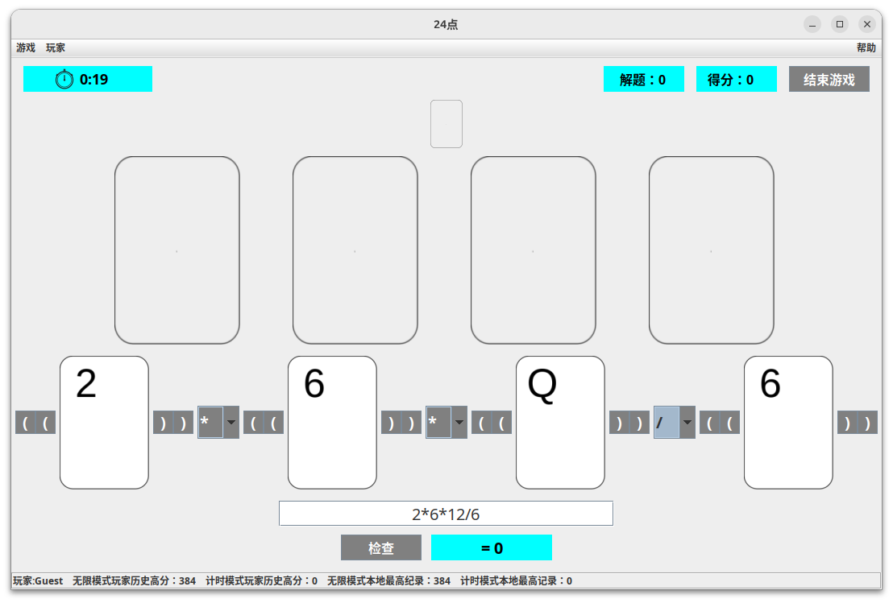

这个页面将介绍24点游戏的基本操作
本游戏中使用的游戏规则和经典的24点游戏没有区别。
>A代表1，J表示11，Q表示12，K表示13
玩家注册账号后，帐号密码信息将被加密保存在您的个人文件夹\保存的游戏\TwentyFour\users.txt中。账号和密码不支持修改和找回。与其一同被保存的还有玩家的历史最高分信息。玩家也可以使用游客账号登陆。游客账号是所有游客共享的。游客的最高分信息也会参与本地玩家的最高分数计算。
游戏分为两个模式：
两个模式都在每秒计时器更新时更新分数。
两个模式的分数都是答题平均时间的一次函数。
下图是操作界面。
二者选一即可。
摆放完成后，点击“检查”检查答案。如果答案为24则自动提交并进入下一题。
点击上方的卡牌背面图案来放弃当前问题，获取答案，并进入下一题。
点击“结束游戏”来结束当前游戏。
请注意：计时模式中点击结束游戏将会放弃本局游戏，分数不会被记录。